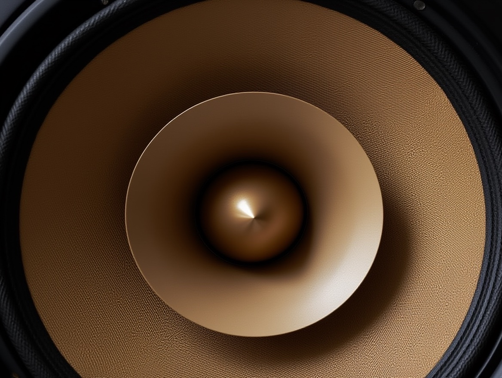
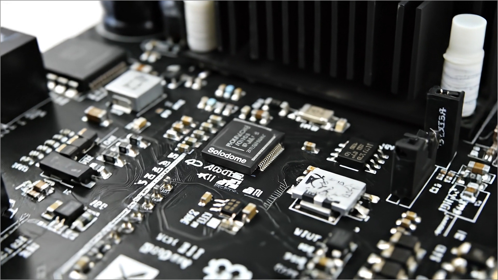
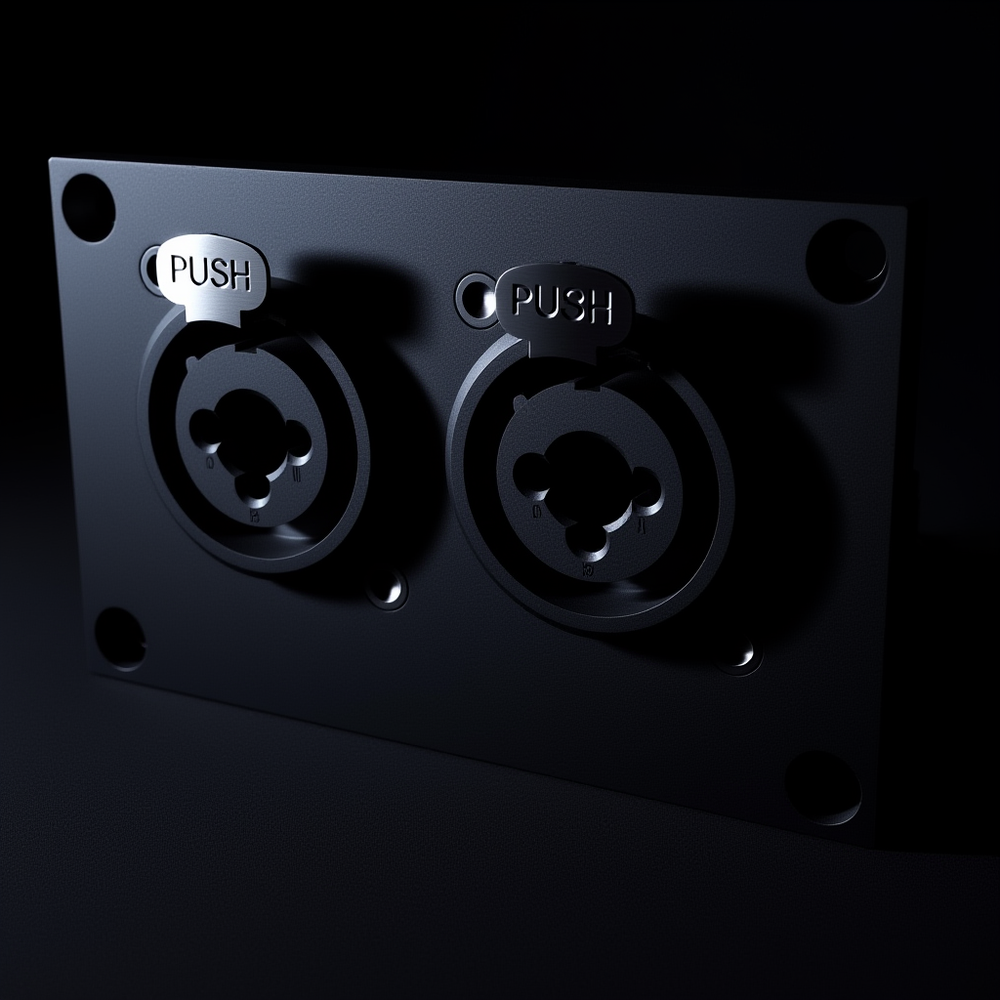
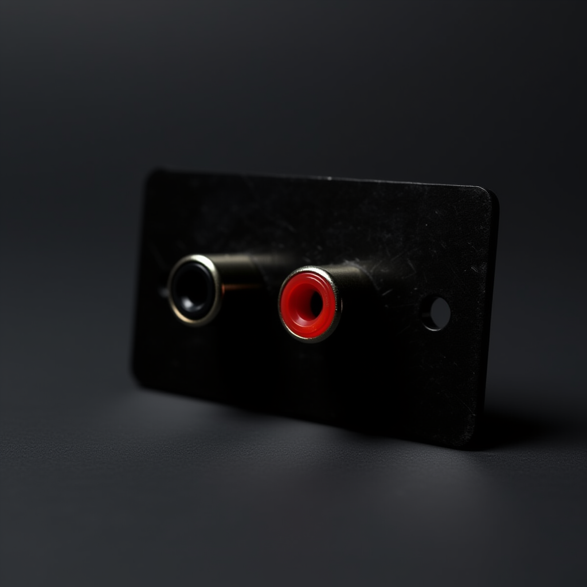
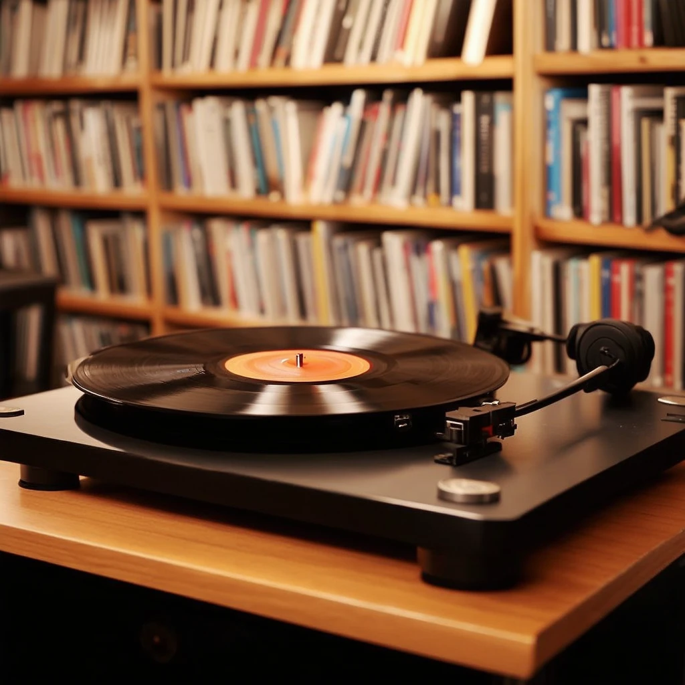
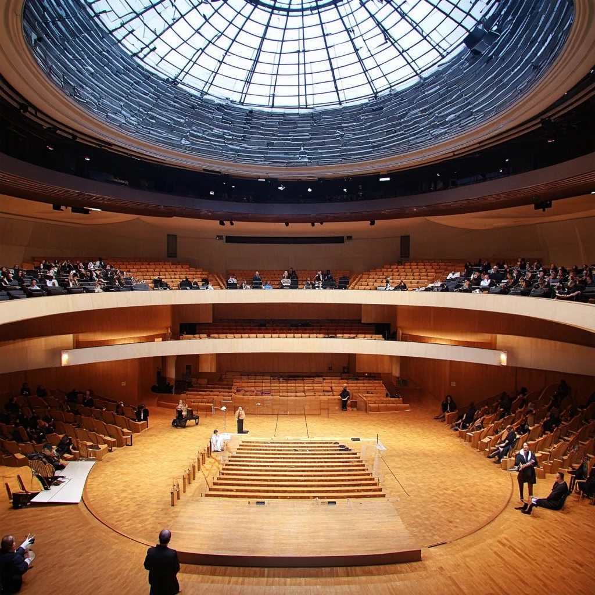

01Full-range detail.
Drivers
Full-range detail.
Low-frequency weight.
Two 8-inch full-range speakers and two 6-inch subwoofers create a 20–20,000Hz response inside the listening field.

Technology
A controlled near-field system created to deliver detail, scale and physical presence without rebuilding the room.
The core principle
Traditional systems move sound through a room before it reaches you. SoloDome surrounds the listener directly, reducing the influence of walls, distance and competing noise.
Drivers
Two 8-inch full-range speakers and two 6-inch subwoofers create a 20–20,000Hz response inside the listening field.
Amplification
A 2.1 amplifier architecture supplies 2×100W plus a dedicated 200W subwoofer channel, with low distortion and high signal-to-noise performance.

Connectivity
Bluetooth and 3.5mm are standard. RCA, balanced XLR and custom DSP options are available for hi-fi and professional workflows.

ProfessionalFor studio equipment and professional sources.

Hi-fiFor turntables, preamps and home listening systems.

PersonalTuning developed around music style or application.

In developmentA future service for recreating reference-room response.
Vibroacoustic platform
Low-frequency sound can be experienced physically as well as heard. SoloDome extends listening into a full-body experience for wellness, relaxation and immersive content.
Explore wellness applications ↘System specifications
Created around you
Select your model, finish, upholstery and professional audio options. Every SoloDome is handcrafted to order in California.
Configure your SoloDome ↗